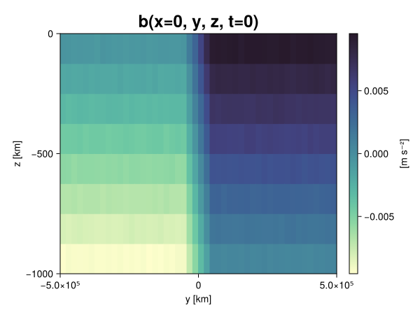
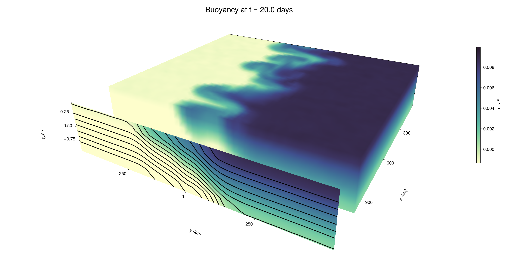

Baroclinic adjustment
In this example, we simulate the evolution and equilibration of a baroclinically unstable front.
Install dependencies
First let's make sure we have all required packages installed.
using Pkg
pkg"add Oceananigans, CairoMakie"using Oceananigans
using Oceananigans.UnitsGrid
We use a three-dimensional channel that is periodic in the x direction:
Lx = 1000kilometers # east-west extent [m]
Ly = 1000kilometers # north-south extent [m]
Lz = 1kilometers # depth [m]
grid = RectilinearGrid(size = (48, 48, 8),
x = (0, Lx),
y = (-Ly/2, Ly/2),
z = (-Lz, 0),
topology = (Periodic, Bounded, Bounded))48×48×8 RectilinearGrid{Float64, Periodic, Bounded, Bounded} on CPU with 3×3×3 halo
├── Periodic x ∈ [0.0, 1.0e6) regularly spaced with Δx=20833.3
├── Bounded y ∈ [-500000.0, 500000.0] regularly spaced with Δy=20833.3
└── Bounded z ∈ [-1000.0, 0.0] regularly spaced with Δz=125.0Model
We built a HydrostaticFreeSurfaceModel with an ImplicitFreeSurface solver. Regarding Coriolis, we use a beta-plane centered at 45° South.
model = HydrostaticFreeSurfaceModel(; grid,
coriolis = BetaPlane(latitude = -45),
buoyancy = BuoyancyTracer(),
tracers = :b,
momentum_advection = WENO(),
tracer_advection = WENO())HydrostaticFreeSurfaceModel{CPU, RectilinearGrid}(time = 0 seconds, iteration = 0)
├── grid: 48×48×8 RectilinearGrid{Float64, Periodic, Bounded, Bounded} on CPU with 3×3×3 halo
├── timestepper: QuasiAdamsBashforth2TimeStepper
├── tracers: b
├── closure: Nothing
├── buoyancy: BuoyancyTracer with ĝ = NegativeZDirection()
├── free surface: ImplicitFreeSurface with gravitational acceleration 9.80665 m s⁻²
│ └── solver: FFTImplicitFreeSurfaceSolver
├── advection scheme:
│ ├── momentum: WENO reconstruction order 5
│ └── b: WENO reconstruction order 5
└── coriolis: BetaPlane{Float64}We start our simulation from rest with a baroclinically unstable buoyancy distribution. We use ramp(y, Δy), defined below, to specify a front with width Δy and horizontal buoyancy gradient M². We impose the front on top of a vertical buoyancy gradient N² and a bit of noise.
"""
ramp(y, Δy)
Linear ramp from 0 to 1 between -Δy/2 and +Δy/2.
For example:
```
y < -Δy/2 => ramp = 0
-Δy/2 < y < -Δy/2 => ramp = y / Δy
y > Δy/2 => ramp = 1
```
"""
ramp(y, Δy) = min(max(0, y/Δy + 1/2), 1)
N² = 1e-5 # [s⁻²] buoyancy frequency / stratification
M² = 1e-7 # [s⁻²] horizontal buoyancy gradient
Δy = 100kilometers # width of the region of the front
Δb = Δy * M² # buoyancy jump associated with the front
ϵb = 1e-2 * Δb # noise amplitude
bᵢ(x, y, z) = N² * z + Δb * ramp(y, Δy) + ϵb * randn()
set!(model, b=bᵢ)Let's visualize the initial buoyancy distribution.
using CairoMakie
# Build coordinates with units of kilometers
x, y, z = 1e-3 .* nodes(grid, (Center(), Center(), Center()))
b = model.tracers.b
fig, ax, hm = heatmap(view(b, 1, :, :),
colormap = :deep,
axis = (xlabel = "y [km]",
ylabel = "z [km]",
title = "b(x=0, y, z, t=0)",
titlesize = 24))
Colorbar(fig[1, 2], hm, label = "[m s⁻²]")
fig
Simulation
Now let's build a Simulation.
simulation = Simulation(model, Δt=20minutes, stop_time=20days)Simulation of HydrostaticFreeSurfaceModel{CPU, RectilinearGrid}(time = 0 seconds, iteration = 0)
├── Next time step: 20 minutes
├── Elapsed wall time: 0 seconds
├── Wall time per iteration: NaN days
├── Stop time: 20 days
├── Stop iteration : Inf
├── Wall time limit: Inf
├── Callbacks: OrderedDict with 4 entries:
│ ├── stop_time_exceeded => Callback of stop_time_exceeded on IterationInterval(1)
│ ├── stop_iteration_exceeded => Callback of stop_iteration_exceeded on IterationInterval(1)
│ ├── wall_time_limit_exceeded => Callback of wall_time_limit_exceeded on IterationInterval(1)
│ └── nan_checker => Callback of NaNChecker for u on IterationInterval(100)
├── Output writers: OrderedDict with no entries
└── Diagnostics: OrderedDict with no entriesWe add a TimeStepWizard callback to adapt the simulation's time-step,
conjure_time_step_wizard!(simulation, IterationInterval(20), cfl=0.2, max_Δt=20minutes)Also, we add a callback to print a message about how the simulation is going,
using Printf
wall_clock = Ref(time_ns())
function print_progress(sim)
u, v, w = model.velocities
progress = 100 * (time(sim) / sim.stop_time)
elapsed = (time_ns() - wall_clock[]) / 1e9
@printf("[%05.2f%%] i: %d, t: %s, wall time: %s, max(u): (%6.3e, %6.3e, %6.3e) m/s, next Δt: %s\n",
progress, iteration(sim), prettytime(sim), prettytime(elapsed),
maximum(abs, u), maximum(abs, v), maximum(abs, w), prettytime(sim.Δt))
wall_clock[] = time_ns()
return nothing
end
add_callback!(simulation, print_progress, IterationInterval(100))Diagnostics/Output
Here, we save the buoyancy, $b$, at the edges of our domain as well as the zonal ($x$) average of buoyancy.
u, v, w = model.velocities
ζ = ∂x(v) - ∂y(u)
B = Average(b, dims=1)
U = Average(u, dims=1)
V = Average(v, dims=1)
filename = "baroclinic_adjustment"
save_fields_interval = 0.5day
slicers = (east = (grid.Nx, :, :),
north = (:, grid.Ny, :),
bottom = (:, :, 1),
top = (:, :, grid.Nz))
for side in keys(slicers)
indices = slicers[side]
simulation.output_writers[side] = JLD2OutputWriter(model, (; b, ζ);
filename = filename * "_$(side)_slice",
schedule = TimeInterval(save_fields_interval),
overwrite_existing = true,
indices)
end
simulation.output_writers[:zonal] = JLD2OutputWriter(model, (; b=B, u=U, v=V);
filename = filename * "_zonal_average",
schedule = TimeInterval(save_fields_interval),
overwrite_existing = true)JLD2OutputWriter scheduled on TimeInterval(12 hours):
├── filepath: ./baroclinic_adjustment_zonal_average.jld2
├── 3 outputs: (b, u, v)
├── array type: Array{Float64}
├── including: [:grid, :coriolis, :buoyancy, :closure]
├── file_splitting: NoFileSplitting
└── file size: 30.7 KiBNow we're ready to run.
@info "Running the simulation..."
run!(simulation)
@info "Simulation completed in " * prettytime(simulation.run_wall_time)[ Info: Running the simulation...
[ Info: Initializing simulation...
[00.00%] i: 0, t: 0 seconds, wall time: 22.249 seconds, max(u): (0.000e+00, 0.000e+00, 0.000e+00) m/s, next Δt: 20 minutes
[ Info: ... simulation initialization complete (22.611 seconds)
[ Info: Executing initial time step...
[ Info: ... initial time step complete (22.727 seconds).
[06.94%] i: 100, t: 1.389 days, wall time: 36.814 seconds, max(u): (1.314e-01, 1.329e-01, 1.561e-03) m/s, next Δt: 20 minutes
[13.89%] i: 200, t: 2.778 days, wall time: 967.889 ms, max(u): (2.414e-01, 2.067e-01, 1.942e-03) m/s, next Δt: 20 minutes
[20.83%] i: 300, t: 4.167 days, wall time: 972.563 ms, max(u): (3.216e-01, 3.102e-01, 1.971e-03) m/s, next Δt: 20 minutes
[27.78%] i: 400, t: 5.556 days, wall time: 1.008 seconds, max(u): (4.391e-01, 4.506e-01, 2.169e-03) m/s, next Δt: 20 minutes
[34.72%] i: 500, t: 6.944 days, wall time: 1.010 seconds, max(u): (4.880e-01, 5.041e-01, 2.506e-03) m/s, next Δt: 20 minutes
[41.67%] i: 600, t: 8.333 days, wall time: 1.047 seconds, max(u): (6.542e-01, 7.042e-01, 2.754e-03) m/s, next Δt: 20 minutes
[48.61%] i: 700, t: 9.722 days, wall time: 978.360 ms, max(u): (8.676e-01, 1.079e+00, 3.361e-03) m/s, next Δt: 20 minutes
[55.56%] i: 800, t: 11.111 days, wall time: 1.067 seconds, max(u): (1.264e+00, 1.246e+00, 4.827e-03) m/s, next Δt: 20 minutes
[62.50%] i: 900, t: 12.500 days, wall time: 1.076 seconds, max(u): (1.471e+00, 1.245e+00, 4.853e-03) m/s, next Δt: 20 minutes
[69.44%] i: 1000, t: 13.889 days, wall time: 1.013 seconds, max(u): (1.297e+00, 1.087e+00, 3.387e-03) m/s, next Δt: 20 minutes
[76.39%] i: 1100, t: 15.278 days, wall time: 1.041 seconds, max(u): (1.412e+00, 1.098e+00, 4.513e-03) m/s, next Δt: 20 minutes
[83.33%] i: 1200, t: 16.667 days, wall time: 935.468 ms, max(u): (1.424e+00, 1.107e+00, 3.614e-03) m/s, next Δt: 20 minutes
[90.28%] i: 1300, t: 18.056 days, wall time: 1.073 seconds, max(u): (1.394e+00, 1.052e+00, 2.638e-03) m/s, next Δt: 20 minutes
[97.22%] i: 1400, t: 19.444 days, wall time: 1.029 seconds, max(u): (1.330e+00, 1.196e+00, 3.548e-03) m/s, next Δt: 20 minutes
[ Info: Simulation is stopping after running for 1.053 minutes.
[ Info: Simulation time 20 days equals or exceeds stop time 20 days.
[ Info: Simulation completed in 1.054 minutes
Visualization
All that's left is to make a pretty movie. Actually, we make two visualizations here. First, we illustrate how to make a 3D visualization with Makie's Axis3 and Makie.surface. Then we make a movie in 2D. We use CairoMakie in this example, but note that using GLMakie is more convenient on a system with OpenGL, as figures will be displayed on the screen.
using CairoMakieThree-dimensional visualization
We load the saved buoyancy output on the top, north, and east surface as FieldTimeSerieses.
filename = "baroclinic_adjustment"
sides = keys(slicers)
slice_filenames = NamedTuple(side => filename * "_$(side)_slice.jld2" for side in sides)
b_timeserieses = (east = FieldTimeSeries(slice_filenames.east, "b"),
north = FieldTimeSeries(slice_filenames.north, "b"),
top = FieldTimeSeries(slice_filenames.top, "b"))
B_timeseries = FieldTimeSeries(filename * "_zonal_average.jld2", "b")
times = B_timeseries.times
grid = B_timeseries.grid48×48×8 RectilinearGrid{Float64, Periodic, Bounded, Bounded} on CPU with 3×3×3 halo
├── Periodic x ∈ [0.0, 1.0e6) regularly spaced with Δx=20833.3
├── Bounded y ∈ [-500000.0, 500000.0] regularly spaced with Δy=20833.3
└── Bounded z ∈ [-1000.0, 0.0] regularly spaced with Δz=125.0We build the coordinates. We rescale horizontal coordinates to kilometers.
xb, yb, zb = nodes(b_timeserieses.east)
xb = xb ./ 1e3 # convert m -> km
yb = yb ./ 1e3 # convert m -> km
Nx, Ny, Nz = size(grid)
x_xz = repeat(x, 1, Nz)
y_xz_north = y[end] * ones(Nx, Nz)
z_xz = repeat(reshape(z, 1, Nz), Nx, 1)
x_yz_east = x[end] * ones(Ny, Nz)
y_yz = repeat(y, 1, Nz)
z_yz = repeat(reshape(z, 1, Nz), grid.Ny, 1)
x_xy = x
y_xy = y
z_xy_top = z[end] * ones(grid.Nx, grid.Ny)Then we create a 3D axis. We use zonal_slice_displacement to control where the plot of the instantaneous zonal average flow is located.
fig = Figure(size = (1600, 800))
zonal_slice_displacement = 1.2
ax = Axis3(fig[2, 1],
aspect=(1, 1, 1/5),
xlabel = "x (km)",
ylabel = "y (km)",
zlabel = "z (m)",
xlabeloffset = 100,
ylabeloffset = 100,
zlabeloffset = 100,
limits = ((x[1], zonal_slice_displacement * x[end]), (y[1], y[end]), (z[1], z[end])),
elevation = 0.45,
azimuth = 6.8,
xspinesvisible = false,
zgridvisible = false,
protrusions = 40,
perspectiveness = 0.7)Axis3()We use data from the final savepoint for the 3D plot. Note that this plot can easily be animated by using Makie's Observable. To dive into Observables, check out Makie.jl's Documentation.
n = length(times)41Now let's make a 3D plot of the buoyancy and in front of it we'll use the zonally-averaged output to plot the instantaneous zonal-average of the buoyancy.
b_slices = (east = interior(b_timeserieses.east[n], 1, :, :),
north = interior(b_timeserieses.north[n], :, 1, :),
top = interior(b_timeserieses.top[n], :, :, 1))
# Zonally-averaged buoyancy
B = interior(B_timeseries[n], 1, :, :)
clims = 1.1 .* extrema(b_timeserieses.top[n][:])
kwargs = (colorrange=clims, colormap=:deep, shading=NoShading)
surface!(ax, x_yz_east, y_yz, z_yz; color = b_slices.east, kwargs...)
surface!(ax, x_xz, y_xz_north, z_xz; color = b_slices.north, kwargs...)
surface!(ax, x_xy, y_xy, z_xy_top; color = b_slices.top, kwargs...)
sf = surface!(ax, zonal_slice_displacement .* x_yz_east, y_yz, z_yz; color = B, kwargs...)
contour!(ax, y, z, B; transformation = (:yz, zonal_slice_displacement * x[end]),
levels = 15, linewidth = 2, color = :black)
Colorbar(fig[2, 2], sf, label = "m s⁻²", height = Relative(0.4), tellheight=false)
title = "Buoyancy at t = " * string(round(times[n] / day, digits=1)) * " days"
fig[1, 1:2] = Label(fig, title; fontsize = 24, tellwidth = false, padding = (0, 0, -120, 0))
rowgap!(fig.layout, 1, Relative(-0.2))
colgap!(fig.layout, 1, Relative(-0.1))
save("baroclinic_adjustment_3d.png", fig)
Two-dimensional movie
We make a 2D movie that shows buoyancy $b$ and vertical vorticity $ζ$ at the surface, as well as the zonally-averaged zonal and meridional velocities $U$ and $V$ in the $(y, z)$ plane. First we load the FieldTimeSeries and extract the additional coordinates we'll need for plotting
ζ_timeseries = FieldTimeSeries(slice_filenames.top, "ζ")
U_timeseries = FieldTimeSeries(filename * "_zonal_average.jld2", "u")
B_timeseries = FieldTimeSeries(filename * "_zonal_average.jld2", "b")
V_timeseries = FieldTimeSeries(filename * "_zonal_average.jld2", "v")
xζ, yζ, zζ = nodes(ζ_timeseries)
yv = ynodes(V_timeseries)
xζ = xζ ./ 1e3 # convert m -> km
yζ = yζ ./ 1e3 # convert m -> km
yv = yv ./ 1e3 # convert m -> km49-element Vector{Float64}:
-500.0
-479.1666666666667
-458.3333333333333
-437.5
-416.6666666666667
-395.8333333333333
-375.0
-354.1666666666667
-333.3333333333333
-312.5
-291.6666666666667
-270.8333333333333
-250.0
-229.16666666666666
-208.33333333333334
-187.5
-166.66666666666666
-145.83333333333334
-125.0
-104.16666666666667
-83.33333333333333
-62.5
-41.666666666666664
-20.833333333333332
0.0
20.833333333333332
41.666666666666664
62.5
83.33333333333333
104.16666666666667
125.0
145.83333333333334
166.66666666666666
187.5
208.33333333333334
229.16666666666666
250.0
270.8333333333333
291.6666666666667
312.5
333.3333333333333
354.1666666666667
375.0
395.8333333333333
416.6666666666667
437.5
458.3333333333333
479.1666666666667
500.0Next, we set up a plot with 4 panels. The top panels are large and square, while the bottom panels get a reduced aspect ratio through rowsize!.
set_theme!(Theme(fontsize=24))
fig = Figure(size=(1800, 1000))
axb = Axis(fig[1, 2], xlabel="x (km)", ylabel="y (km)", aspect=1)
axζ = Axis(fig[1, 3], xlabel="x (km)", ylabel="y (km)", aspect=1, yaxisposition=:right)
axu = Axis(fig[2, 2], xlabel="y (km)", ylabel="z (m)")
axv = Axis(fig[2, 3], xlabel="y (km)", ylabel="z (m)", yaxisposition=:right)
rowsize!(fig.layout, 2, Relative(0.3))To prepare a plot for animation, we index the timeseries with an Observable,
n = Observable(1)
b_top = @lift interior(b_timeserieses.top[$n], :, :, 1)
ζ_top = @lift interior(ζ_timeseries[$n], :, :, 1)
U = @lift interior(U_timeseries[$n], 1, :, :)
V = @lift interior(V_timeseries[$n], 1, :, :)
B = @lift interior(B_timeseries[$n], 1, :, :)Observable([-0.009358301809771992 -0.008110258655818275 -0.006852718610293157 -0.005624848816650115 -0.004365234463807896 -0.003125745851079585 -0.0018553783379168202 -0.0006518487560904673; -0.009389530783883467 -0.008151666304903677 -0.006889196229834326 -0.005614555202947601 -0.004375012215993189 -0.003154283128485997 -0.0018562966975388274 -0.0006225360534995218; -0.009386946955610714 -0.008148385279789061 -0.006882640255459989 -0.0056525300743498095 -0.004385839540905389 -0.003120645787446272 -0.0018720141996051906 -0.0006086807436854034; -0.009355051514555192 -0.008128771291255485 -0.006891564178869519 -0.005632398162273099 -0.0043681050194367315 -0.00311591314440008 -0.0018673129165256085 -0.0006216998939389304; -0.009341715162571483 -0.008138620702816518 -0.006857567975893567 -0.0056251243154061435 -0.004377524372137809 -0.003095709970920906 -0.0018586928403346561 -0.0006193772128074479; -0.009393902862311525 -0.008097758850424307 -0.006872069497760797 -0.005609303610710793 -0.004395541038683771 -0.003129262061675218 -0.001879062878383257 -0.0006220087551157138; -0.009354004892967496 -0.008134904170835408 -0.006884035504158209 -0.005625413032253157 -0.0043800184891967546 -0.0031604560026564283 -0.0018851637646113823 -0.0006383930831703712; -0.009376221015991412 -0.008129023025540472 -0.006855662101198545 -0.005620086893203383 -0.004367660582961857 -0.0031356786693325736 -0.0018783912923031373 -0.0006442676399436219; -0.009385820129217053 -0.008138016765716906 -0.006848073794485165 -0.005621391735815401 -0.004364250839566513 -0.003079162436838542 -0.001882187853343702 -0.0006254356291719819; -0.009373344660987668 -0.008108437056092169 -0.006876251320848418 -0.00562636164343783 -0.0043933252774113725 -0.003120796776070106 -0.001885370249583812 -0.0006015772873058113; -0.009370720815224836 -0.008131818386425812 -0.006875689992677906 -0.005631352797340658 -0.0043722508544381785 -0.0030916826101836 -0.0018822981971827809 -0.0006236557941294078; -0.009373498153646713 -0.008127141743104844 -0.00688883913902278 -0.005636711898472243 -0.004360678056924309 -0.0031284101100474706 -0.0018614749922930662 -0.0006311385388087692; -0.009377929619088015 -0.008127709108431958 -0.0068798353548566935 -0.005628294346340541 -0.0043892729049500095 -0.003100107323169267 -0.00185607195073125 -0.000629982181719142; -0.009412453566421437 -0.008107084179062815 -0.006881606625445839 -0.00560640930437538 -0.004360381805326096 -0.003122822856504137 -0.0018687064904558774 -0.0006136817208464594; -0.009392210566430552 -0.008137505339321319 -0.0068676638084713935 -0.005627805193536926 -0.004380852210957819 -0.0031215175740462904 -0.0018816810562054245 -0.0006283052756253971; -0.009387643878962662 -0.008141598026178394 -0.006892071974537582 -0.005631329749328256 -0.004324284272166738 -0.0031207796252794777 -0.0018505598975737858 -0.0006379234970001465; -0.009391387845926007 -0.008134035937049951 -0.006862003667334617 -0.005594906134372173 -0.004372701342495202 -0.003123565000721988 -0.001864881004825099 -0.0006244111551730861; -0.009374206456422401 -0.00812653982267241 -0.006899980167723689 -0.005620697981820094 -0.004380926064170645 -0.0031288305508144995 -0.0018530355837785937 -0.0006362992216050931; -0.009389336428868114 -0.008117370437936497 -0.006894594797222888 -0.005611980397072056 -0.004392156393672668 -0.0031355496094211733 -0.0018701218899183243 -0.0006398582271457525; -0.009393637634120424 -0.00811436846438722 -0.0068906005169350045 -0.005624362590356559 -0.004385796253062645 -0.0031095033063330006 -0.0018652205125349187 -0.0006206359366735717; -0.0093751048411242 -0.008110649597763645 -0.006876388116415076 -0.005633211804545907 -0.00434426654164958 -0.0031007839559092708 -0.0018955381758911018 -0.0006387064898581836; -0.009372728307889197 -0.008117523925664389 -0.006888325896564236 -0.005632873427617829 -0.00439068933577939 -0.003126902937565261 -0.0018837324087734202 -0.0006182554161865552; -0.007509646698096985 -0.006242396266140722 -0.004991502252911899 -0.0037529634016281155 -0.0024899306936427665 -0.0012337781995039243 -1.190514913586706e-6 0.0012585445164354145; -0.005444685052387414 -0.0041827508436241626 -0.002900758260621777 -0.0016632948660235587 -0.0004259445988669371 0.0008342472874471916 0.002095777268534229 0.0033170276187156917; -0.0033565464121239237 -0.002101217582962251 -0.0008585611816497473 0.0003890910415316232 0.0016820414228457571 0.002906470121259167 0.004163412537043468 0.005448976483132689; -0.001257918772758559 1.0453945480770876e-5 0.0012358765036239623 0.0024820658732828097 0.003769298740561783 0.004986812895430462 0.006271763037878635 0.007507116198269229; 0.0006320927833954477 0.0018564815214929659 0.0031204469777346617 0.00437960887489922 0.00563876109827753 0.006856975156250333 0.00812028359558286 0.00938199710534078; 0.0006349328461670722 0.0018757881831406049 0.0031131280523264047 0.00436270754064125 0.005626804359384409 0.006866437153868939 0.008161382034278453 0.009378272640402419; 0.0006160292176002137 0.0018987539569813392 0.0030984046085736593 0.004365699056379062 0.005632679832001192 0.006905730133963496 0.008134446385625169 0.009387375016737911; 0.0006238923594692141 0.0018555473609723468 0.0031227754668119953 0.004363147055653227 0.005631393127160607 0.006851348366218219 0.008141645293852744 0.009362108434014341; 0.000647684692417063 0.0018784190653303508 0.003148736612026682 0.004396544055109463 0.005642134998739743 0.006898191788968594 0.008121740295215306 0.009390160876086252; 0.0006241919438979778 0.0018536638245424196 0.0031299029032778986 0.004360816628130072 0.0056205092251526804 0.006885590275274307 0.008136164555076725 0.009346412207354382; 0.0006130526449055728 0.0018881388706150969 0.003129551872801816 0.004391394234852041 0.005601400382958192 0.006870464555307838 0.00814954074715094 0.009407878397003978; 0.0006311687016443559 0.001892655339631977 0.0031682588541872424 0.004378170212019497 0.005631013410658099 0.006848445905989883 0.008116191464476395 0.00938033123710398; 0.0006295342356101502 0.0018851989586478768 0.0031258814690761096 0.004376042288553939 0.005633841812169642 0.0068765824106219635 0.008132554672436594 0.009377676190245708; 0.000630517874775089 0.0018692117788628839 0.0031615675350387708 0.004343316538978671 0.0056146284782044266 0.006882634308863818 0.008133981536053147 0.009374680173866978; 0.0006087576827611617 0.0018647662389909391 0.0031242486659310356 0.004371961351807913 0.005651565016120926 0.006846956293403407 0.008113075242814979 0.009379025148193063; 0.0006346785278171855 0.001901890261973012 0.0031297433199605957 0.004417449041644383 0.005634829503737628 0.006907569907971377 0.008125787723765786 0.009363887739808308; 0.0006372356599396488 0.0018563687485642077 0.0031497067304044665 0.00438427167474358 0.005617493840213118 0.006877356769831859 0.008152081019191336 0.009373249146589024; 0.0006191299644125072 0.001875597985336211 0.0031126743375128143 0.004386166773424617 0.005614498323452744 0.006855813893334035 0.008125964351345211 0.009396604728746866; 0.0006109839984798337 0.0018961434987218254 0.0031352970376663965 0.004367727871133045 0.005609403427645913 0.006857516967419806 0.008144620186495704 0.009366550592082142; 0.0006408893204931297 0.001884093532992661 0.003134036038901627 0.004365643842357637 0.005620351105476237 0.0068681153213762764 0.008101670330626788 0.009374025209647996; 0.0006187294169706708 0.0018723613612101383 0.003109500265506973 0.00436980631842025 0.005634967434432176 0.006841197189577615 0.008128399424183337 0.009390626552826348; 0.0006236168222767328 0.0018670203001329103 0.0030982421787099754 0.004363195082680187 0.00562398461601937 0.006874030280506642 0.008131394346463249 0.009356660808494526; 0.0006084679197902909 0.001877370135454408 0.0031076253321351836 0.004366533791826306 0.005637926079595215 0.006873626637590933 0.008125376571938616 0.009405162547034314; 0.0006069894995354456 0.001860647194035122 0.0031093485432298743 0.0043843036479141295 0.005632679675153896 0.006858219207648765 0.0081178112122858 0.009367231456048702; 0.0006338358483122995 0.001883777655758323 0.003110766017588395 0.004356113806770297 0.005628667811275701 0.00685731315984104 0.008099874100008777 0.009371148323808205; 0.0006338645519380957 0.0018955527401828109 0.003106797290950996 0.004363213184594074 0.005637171443367846 0.006841702441612957 0.008155563914805377 0.00937529556731115])
and then build our plot:
hm = heatmap!(axb, xb, yb, b_top, colorrange=(0, Δb), colormap=:thermal)
Colorbar(fig[1, 1], hm, flipaxis=false, label="Surface b(x, y) (m s⁻²)")
hm = heatmap!(axζ, xζ, yζ, ζ_top, colorrange=(-5e-5, 5e-5), colormap=:balance)
Colorbar(fig[1, 4], hm, label="Surface ζ(x, y) (s⁻¹)")
hm = heatmap!(axu, yb, zb, U; colorrange=(-5e-1, 5e-1), colormap=:balance)
Colorbar(fig[2, 1], hm, flipaxis=false, label="Zonally-averaged U(y, z) (m s⁻¹)")
contour!(axu, yb, zb, B; levels=15, color=:black)
hm = heatmap!(axv, yv, zb, V; colorrange=(-1e-1, 1e-1), colormap=:balance)
Colorbar(fig[2, 4], hm, label="Zonally-averaged V(y, z) (m s⁻¹)")
contour!(axv, yb, zb, B; levels=15, color=:black)Finally, we're ready to record the movie.
frames = 1:length(times)
record(fig, filename * ".mp4", frames, framerate=8) do i
n[] = i
endThis page was generated using Literate.jl.